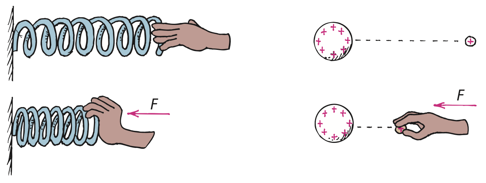
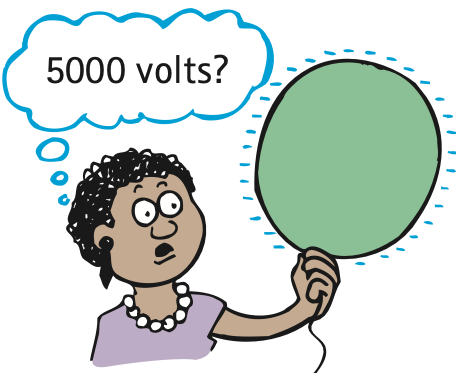
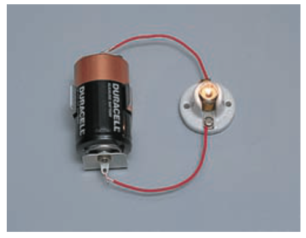
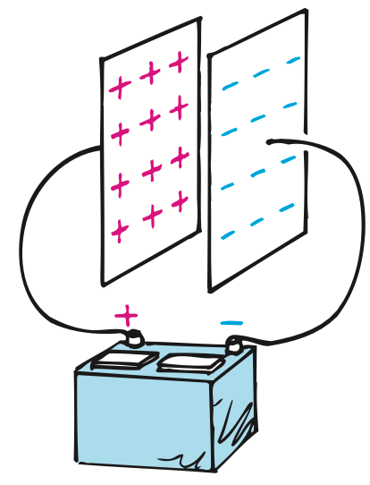

Electric Potential and Current
Mathematical idea: The relationships $V=E/q$ and $I=Q/t$ turn the words “energy per charge” and “charge per time” into measurable quantities.
You will connect potential-energy diagrams to a water-pump analogy, then use batteries, generators, and circuit paths to separate what moves from what transfers energy.
Learning Target
Students will explain voltage as electric potential difference and current as the rate of charge flow in a complete circuit.
I can statements
- I can explain electric potential energy in terms of separated charges.
- I can describe voltage as energy per charge.
- I can explain that current is the flow of electric charge.
- I can explain why a sustained current requires a voltage source and a complete path.
- I can distinguish charge flow from energy transfer in a circuit.
- I can compare the role of a battery or generator to an electric “pump.”
Vocabulary
These are words you will see in this section. Do not define them yet.
- electric potential energy
- electric potential
- voltage
- potential difference
- current
- conduction electron
- ampere
- voltage source
- complete circuit
- battery
- generator
- capacitor
Use the preview activity to decide which words you already know, recognize, or do not know yet. Watch for these words in bold when they are first introduced or defined in the reading.
Preview: Skim Before You Read
Directions
Before reading closely, skim the vocabulary list and the section. Look at titles, headings, bold words, pictures, captions, diagrams, tables, and formulas. Do not try to understand everything yet. Your job is to notice what already looks familiar and make predictions about what this section may explain.
Step 1 — Sort the vocabulary. Write each vocabulary word in the column that best matches what you know right now. You may move a word later.
| Know for sure | Recognize | Don’t know yet |
|---|---|---|
Step 2 — Skim the section. Record what catches your attention before you read closely.
| What I noticed | |
|---|---|
| What I predict | |
| What I wonder |
Content: Read, Look, Annotate, Apply
Directions
Read in short chunks. Annotate the prose and the figures together: underline evidence, circle or highlight bold vocabulary, label arrows or measured features, connect a sentence to an image, and write short questions or connections in the margins.
Reading 1: From Electric Potential Energy to Voltage
A charged object can store electric potential energy because of its position relative to other charges. Pushing a positive test charge closer to another positive charge requires work against repulsion, increasing the stored electric energy. If released, that stored energy can become kinetic energy.
The amount of potential energy depends on how much charge is present. Twice as much test charge at the same location can have twice as much potential energy. To compare locations without changing the amount of test charge, physicists use electric potential: energy per unit charge.
The everyday circuit word for electric potential difference is voltage. One volt means one joule of energy per coulomb of charge. This is why a 1.5-V cell can be interpreted as providing 1.5 J of energy for each coulomb moved through the circuit.
A potential difference compares two points. It is the electrical “push” available between them, not a substance that flows. The high-voltage balloon in the textbook makes this distinction useful: its voltage can be thousands of volts while the total stored energy remains small because the amount of charge is tiny.

Image read: In both halves, mark where work is done on the system and where stored potential energy increases.

Image read: Trace the energy change in each half from stored potential energy to motion.

Image read: Circle the objects at the same location. Explain why their potential can match even when their total potential energies differ.

Image read: Underline the evidence that high voltage does not automatically mean a large total energy transfer.
Stop and Discuss
- Using the potential-energy figures, explain how doing work against an electric force can store energy.
- Why can two different charge amounts at the same location have the same electric potential but different potential energies?
- Why is the charged balloon a good warning against treating “high voltage” as the same thing as “high energy”?
Teacher answer: Work against an electric force stores potential energy. Electric potential is energy per charge, so it can stay the same even when total charge and total PE differ.
$V$ is voltage in volts, $E$ is electric energy in joules, and $q$ is charge in coulombs.
Interpret the relationship in words: voltage tells how many joules of energy correspond to each coulomb of charge.
Example 1: Energy per Charge
A device transfers 18 J of energy for every 3 C of charge.
- Use $V=E/q$ to determine the voltage.
- Explain what your numerical answer means in joules per coulomb.
Teacher answer: 18 J / 3 C = 6 V, meaning 6 joules per coulomb.
You Try It 1: Same Voltage, Different Totals
Another device transfers 24 J to 4 C of charge.
- Determine the voltage.
- Compare it with the Example and explain why equal voltage does not require equal total energy.
Teacher answer: 24 J / 4 C = 6 V. Same energy per charge, different total energy and charge.
Reading 2: Current: Charge Flow in a Complete Path
A voltage difference can produce charge flow only when there is a conducting path. In the water analogy, water flows while a pressure difference exists; when pressures equalize, the flow stops. A pump can maintain the difference and keep the water moving. Electric circuits behave similarly.
Electric current is charge flow measured as a rate. In a metal wire, the mobile particles are conduction electrons. Protons remain bound in atomic nuclei; the movable electrons respond to the electric conditions established in the conductor.
The unit of current is the ampere. One ampere means one coulomb of charge passes a point each second. A larger current means more charge passes that cross-section per unit time—not that individual electrons must be moving at enormous speed.
A sustained flow also requires a complete circuit, an unbroken path. A gap interrupts the path. The source can maintain voltage, but it cannot drive steady charge around a loop that is physically open.

Image read: Label the pressure difference and the pump. Write the electrical idea that corresponds to each feature.

Image read: Trace the complete conducting path from one cell terminal through the device and back to the other terminal.
Stop and Discuss
- What part of the water analogy corresponds to voltage, and what corresponds to a voltage source?
- Explain current without using the phrase “current flows.” What actually flows?
- Why can a battery have voltage even when an open circuit prevents steady current?
Teacher answer: Pressure difference models voltage; the pump models a voltage source. Charge flows; current is the rate. An open path stops sustained current.
$I$ is current in amperes, $Q$ is charge that passes a point in coulombs, and $t$ is elapsed time in seconds.
An ampere is therefore a coulomb per second.
Example 2: How Much Current?
A wire carries 12 C of charge past a point in 4 s.
- Use $I=Q/t$ to calculate the current.
- Interpret the result as coulombs passing each second.
Teacher answer: I = 12 C / 4 s = 3 A, or 3 C/s.
You Try It 2: Charge Through a Lamp
A lamp circuit moves 15 C of charge past a point in 5 s.
- Calculate the current.
- If the circuit is opened, what happens to the sustained current? Explain using path reasoning.
Teacher answer: I = 15 C / 5 s = 3 A. Opening the circuit breaks the complete path, so steady current stops.
Reading 3: Voltage Sources Move Energy, Not Voltage
A sustained current needs a voltage source that continually separates charge and maintains a potential difference. A chemical battery does this by converting chemical energy into electric potential energy. A generator separates charge by electromagnetic processes.
The pump analogy has a limit that students must state carefully: charge moves through the circuit because of voltage, but voltage itself does not flow. The source maintains energy differences per charge. In a working device, electrical energy is transferred into other forms such as light, thermal energy, or motion.
This distinction helps correct the idea that a battery “sends out current that gets used up.” The charges already present in conductors take part in the current. The source supplies energy to those charges and maintains the potential difference that drives the process.
The electric eel in the source is an unusual biological voltage source. The capacitor image shows a different idea: a capacitor separates equal and opposite charges on two conductors and stores energy in the electric field between them. Both examples reinforce that voltage describes an energy-per-charge difference, not a traveling material.
Image read: Mark the two regions between which the voltage is measured. Do not draw an arrow that suggests “voltage flows.”

Image read: Label the two plates with opposite signs and identify where charge separation stores electric energy.
Stop and Discuss
- Correct the sentence “voltage flows from the battery to the bulb.”
- What job does a battery or generator perform that a pair of briefly charged metal spheres cannot sustain?
- How can charge keep circulating while energy is transferred to a lamp or motor?
Teacher answer: Voltage does not flow. A source maintains potential difference and supplies energy; charge already in the conductors moves.
Example 3: What Is the Battery Supplying?
A lamp glows steadily in a complete battery circuit.
- State what physically moves through the wire.
- State what the battery supplies to the charges so the lamp can transfer energy.
Teacher answer: Charges move through the wire. The battery supplies electrical energy per charge and maintains the potential difference.
You Try It 3: Flow or Difference?
A student says, “The 9 volts leave the battery, travel through the resistor, and get used up.”
- Identify the misconception.
- Rewrite the statement using voltage, charge flow, and energy transfer correctly.
Teacher answer: Better wording: the battery maintains a 9-V potential difference; charge flows through the complete circuit and transfers energy in the resistor.
Vocabulary: Define the Terms
You have now seen these words in the reading, images, and practice. Use this table to consolidate the physics meaning of each term.
| Vocabulary term | Definition |
|---|---|
| electric potential energy | Energy a charge has because of its location in an electric field. |
| electric potential | Electric potential energy per unit charge at a location. |
| voltage | Electric potential difference; energy transferred or available per unit charge between two points. |
| potential difference | A difference in electric potential between two points; another way to describe voltage across them. |
| current | The rate at which electric charge passes a point. |
| conduction electron | An electron in a conductor that is free to move through the material. |
| ampere | The SI unit of electric current; one coulomb of charge per second. |
| voltage source | A device or system that maintains a difference in electric potential. |
| complete circuit | An unbroken conducting path that allows sustained charge flow. |
| battery | A voltage source that uses chemical processes to separate charge and provide electric potential energy. |
| generator | A voltage source that uses electromagnetic processes to separate charge. |
| capacitor | A device with separated conductors that stores energy in an electric field. |
Summary
- Electric potential energy depends on charge and position in an electric field; electric potential compares energy per charge.
- Voltage is a potential difference measured in volts, where one volt corresponds to one joule per coulomb.
- Current is the rate of charge flow; one ampere is one coulomb per second.
- A sustained current needs both a voltage source and a complete conducting path.
- Charge moves through the circuit, while the source supplies energy and maintains voltage; voltage itself does not flow.
Teacher summary: Keep voltage = energy per charge, current = charge-flow rate, and source/path roles distinct. The battery is an energy-transfer device, not a container of “current.”
Common Mistakes
| Mistake | Why it is tempting | Check instead |
|---|---|---|
| Voltage is the same thing as current. | Both are electrical quantities that appear whenever a circuit operates. | Voltage is energy per charge; current is charge flow per time. |
| Voltage flows through the wire. | We often speak loosely about electricity “flowing.” | Charge flows. Voltage is a difference between points. |
| A battery is the source of all the electrons in a circuit. | The battery is visibly the source component. | Conducting wires already contain mobile electrons; the battery supplies energy and maintains potential difference. |
| High voltage always means high total energy. | Large energy per charge sounds like a large total. | Total energy also depends on how much charge is involved. |
Which quantity is energy per charge: voltage or current? Which quantity is charge flow per time?
If 8 C of charge pass a point in 2 s, calculate the current and state what the answer means.
What is one thing you learned in this section? Explain it in at least one complete sentence.
What is one thing from this section you still need to understand or practice more? Be specific.